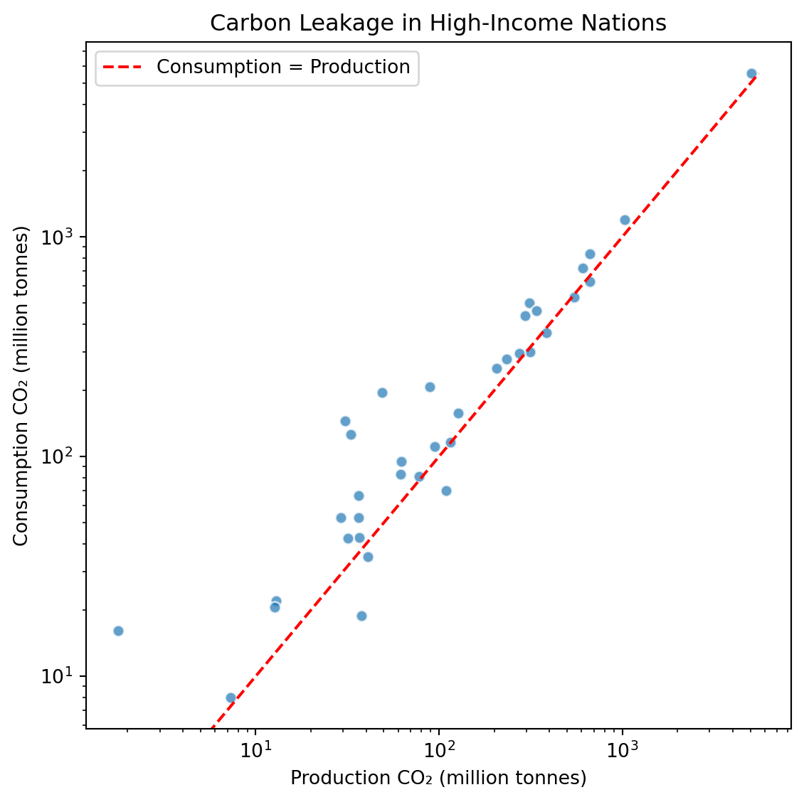
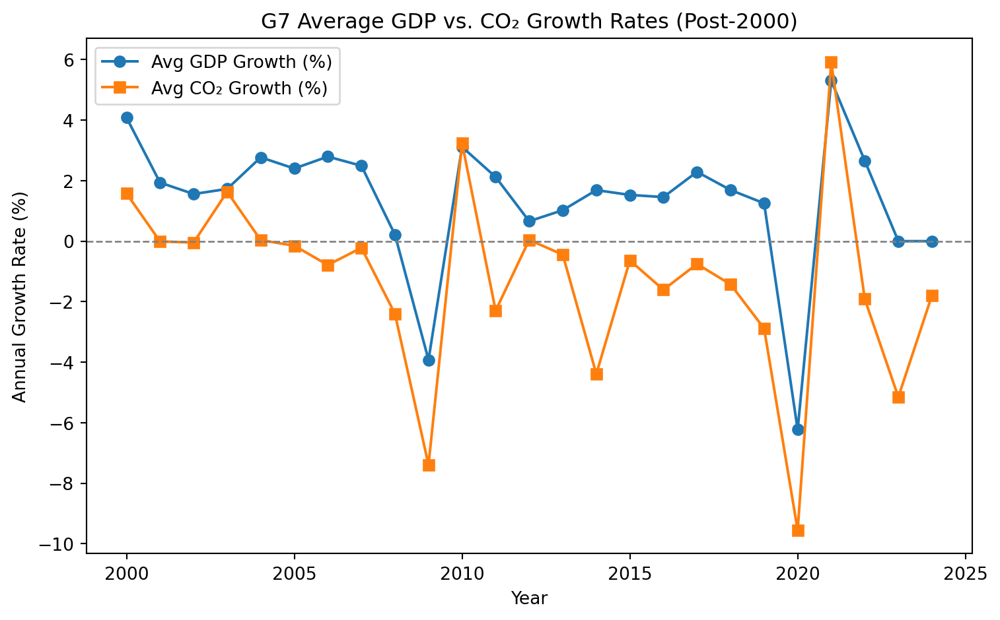
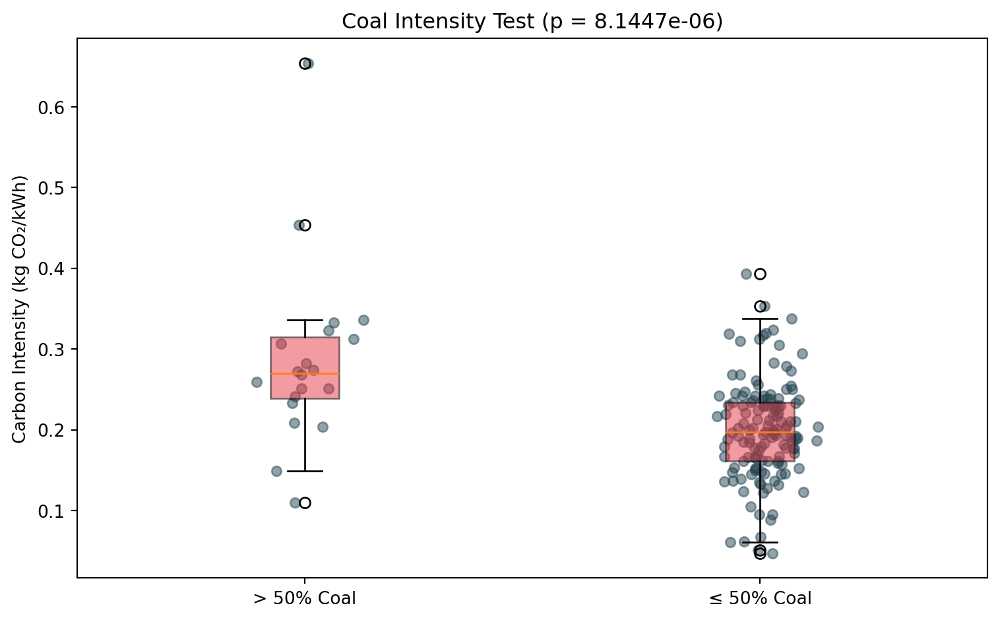
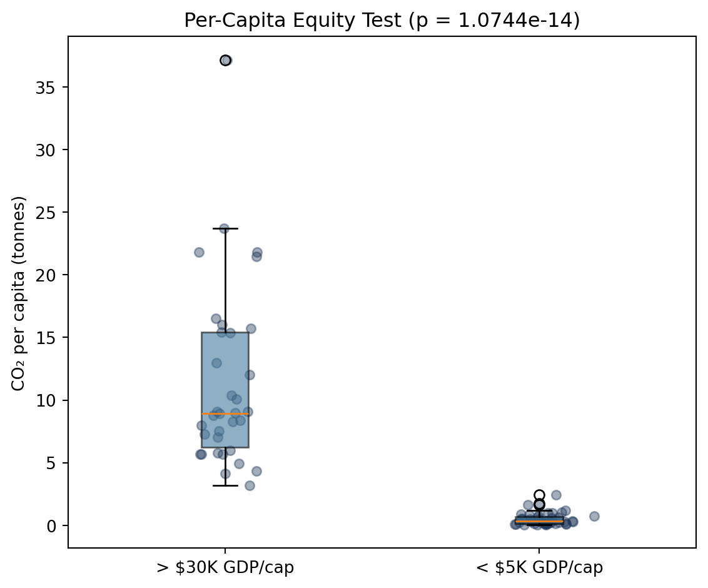

This section formally tests explicit hypotheses regarding global CO₂ emissions using statistical methods, evaluating carbon leakage, decoupling of economic growth, coal intensity, historical responsibility, per-capita equity, and macroeconomic correlations. We maintain a significance threshold of \(\alpha = 0.05\).
H1: Carbon Leakage
H₀ (Null Hypothesis): For high-income nations (GDP per capita > $30,000), consumption-based CO₂ is \(\le\) production-based CO₂. H₁ (Alternative Hypothesis): For high-income nations, consumption-based CO₂ is significantly higher than production-based CO₂.
This hypothesis directly tests the carbon leakage argument presented visually in Chapter B.
Test Justification: A paired t-test (ttest_rel) assesses pairwise numeric differences between localized production and imported consumption per nation.
View Code
# Filter to the most recent year with complete trade data per countryh1_df = country_df.dropna(subset=['co2', 'consumption_co2', 'gdp_per_capita']).copy()latest_years = h1_df.groupby('iso_code')['year'].max().reset_index()h1_latest = pd.merge(latest_years, h1_df, on=['iso_code', 'year'])h1_high_income = h1_latest[h1_latest['gdp_per_capita'] >30000]production = h1_high_income['co2']consumption = h1_high_income['consumption_co2']t1, p1 = stats.ttest_rel(consumption, production, alternative='greater')reject_h1 ="Yes"if p1 < ALPHA else"No"print(f"t = {t1:.3f}, p = {p1:.4e}")from numpy import mean, stdcohens_d = (mean(consumption) - mean(production)) / std(consumption - production)print(f"Cohen's d = {cohens_d:.3f}")from scipy.stats import t as t_distdiff = consumption.values - production.valuesci_low, ci_high = t_dist.interval(0.95, df=len(diff)-1, loc=np.mean(diff), scale=stats.sem(diff))print(f"95% CI for mean difference: [{ci_low:.1f}, {ci_high:.1f}] Mt")fig, ax = plt.subplots(figsize=(6, 6))ax.scatter(production, consumption, alpha=0.7, edgecolors='w')max_val =max(production.max(), consumption.max())ax.plot([0, max_val], [0, max_val], 'r--', label='Consumption = Production')ax.set_xscale('log')ax.set_yscale('log')ax.set_xlabel('Production CO₂ (million tonnes)')ax.set_ylabel('Consumption CO₂ (million tonnes)')ax.set_title('Carbon Leakage in High-Income Nations')ax.legend()plt.tight_layout()plt.savefig(OUT /"F1_carbon_leakage.png")plt.show()conclusion_h1 =f"""**Real-World Implication:**We {'reject'if p1 < ALPHA else'fail to reject'} H₀ (t={t1:.3f}, p={p1:.4e}). For high-income nations, consumption-based CO₂ {'was'if p1 < ALPHA else'was not'} significantly higher than territorial production. The robust effect size (Cohen's d = {cohens_d:.3f}) and a 95% CI of [{ci_low:.1f}, {ci_high:.1f}] Mt tangibly quantify the phenomenon of "carbon leakage." Wealthy countries systematically offshore their heavy emissions profiles while importing the finished goods."""display(Markdown(conclusion_h1))
t = 3.430, p = 7.8182e-04
Cohen's d = 0.580
95% CI for mean difference: [23.5, 91.8] Mt

Real-World Implication: We reject H₀ (t=3.430, p=7.8182e-04). For high-income nations, consumption-based CO₂ was significantly higher than territorial production. The robust effect size (Cohen’s d = 0.580) and a 95% CI of [23.5, 91.8] Mt tangibly quantify the phenomenon of “carbon leakage.” Wealthy countries systematically offshore their heavy emissions profiles while importing the finished goods.
H2: Decoupling
H₀ (Null Hypothesis): In G7 nations post-2000, annual GDP growth \(\le\) annual CO₂ growth rate. H₁ (Alternative Hypothesis): In G7 nations post-2000, annual GDP growth is significantly higher than annual CO₂ growth rate.
This hypothesis formally tests the decoupling trends observed in Chapter E.
Test Justification: A Wilcoxon signed-rank test (wilcoxon) bounds growth rate comparisons safely without strict normality assumptions.
View Code
g7_iso = ['USA', 'GBR', 'FRA', 'DEU', 'ITA', 'CAN', 'JPN']h2_df = country_df[(country_df['iso_code'].isin(g7_iso)) & (country_df['year'] >=1999)].copy()h2_df.sort_values(['iso_code', 'year'], inplace=True)h2_df['gdp_pct'] = h2_df.groupby('iso_code')['gdp'].pct_change()h2_df['co2_pct'] = h2_df.groupby('iso_code')['co2'].pct_change()h2_test_df = h2_df[h2_df['year'] >=2000].dropna(subset=['gdp_pct', 'co2_pct'])w2, p2 = stats.wilcoxon(h2_test_df['gdp_pct'], h2_test_df['co2_pct'], alternative='greater')reject_h2 ="Yes"if p2 < ALPHA else"No"print(f"W = {w2:.3f}, p = {p2:.4e}")plt.figure(figsize=(8, 5))avg_growth = h2_test_df.groupby('year')[['gdp_pct', 'co2_pct']].mean()plt.plot(avg_growth.index, avg_growth['gdp_pct'] *100, label='Avg GDP Growth (%)', marker='o')plt.plot(avg_growth.index, avg_growth['co2_pct'] *100, label='Avg CO₂ Growth (%)', marker='s')plt.axhline(0, color='gray', linestyle='--', linewidth=1)plt.xlabel('Year')plt.ylabel('Annual Growth Rate (%)')plt.title('G7 Average GDP vs. CO₂ Growth Rates (Post-2000)')plt.legend()plt.tight_layout()plt.savefig(OUT /"F2_decoupling.png")plt.show()conclusion_h2 =f"""**Real-World Implication:**We {'reject'if p2 < ALPHA else'fail to reject'} H₀ (W={w2:.3f}, p={p2:.4e}). GDP growth {'was'if p2 < ALPHA else'was not'} significantly higher than CO₂ growth in G7 nations post-2000. The post-2000 data confirms that robust systemic decoupling has been achieved without sacrificing macroeconomic output, via cleaner energy infrastructures and service-economy transitions."""display(Markdown(conclusion_h2))
C:\Users\r4849\AppData\Local\Temp\ipykernel_28892\3829335768.py:4: FutureWarning: The default fill_method='ffill' in SeriesGroupBy.pct_change is deprecated and will be removed in a future version. Either fill in any non-leading NA values prior to calling pct_change or specify 'fill_method=None' to not fill NA values.
h2_df['gdp_pct'] = h2_df.groupby('iso_code')['gdp'].pct_change()
W = 14103.000, p = 7.1237e-22

Real-World Implication: We reject H₀ (W=14103.000, p=7.1237e-22). GDP growth was significantly higher than CO₂ growth in G7 nations post-2000. The post-2000 data confirms that robust systemic decoupling has been achieved without sacrificing macroeconomic output, via cleaner energy infrastructures and service-economy transitions.
H3: Coal Intensity
H₀ (Null Hypothesis): Nations where coal > 50% of the fuel-mix have \(\le\) carbon intensity than those below 50%. H₁ (Alternative Hypothesis): Nations heavily reliant on coal (> 50%) have significantly higher carbon intensity (kg CO₂/kWh).
This hypothesis tests the coal intensity argument from Chapter C.
Test Justification: A Mann-Whitney U test (mannwhitneyu) is employed as it accommodates heteroscedastic, independent cross-sectional distributions optimally.
View Code
h3_df = country_df.dropna(subset=['co2', 'coal_co2', 'co2_per_unit_energy']).copy()latest_h3 = h3_df.groupby('iso_code')['year'].max().reset_index()h3_test = pd.merge(latest_h3, h3_df, on=['iso_code', 'year'])h3_test['coal_share'] = h3_test['coal_co2'] / h3_test['co2']high_coal = h3_test[h3_test['coal_share'] >0.5]['co2_per_unit_energy']low_coal = h3_test[h3_test['coal_share'] <=0.5]['co2_per_unit_energy']u3, p3 = stats.mannwhitneyu(high_coal, low_coal, alternative='greater')reject_h3 ="Yes"if p3 < ALPHA else"No"print(f"U = {u3:.3f}, p = {p3:.4e}")fig, ax = plt.subplots(figsize=(8, 5))ax.boxplot([high_coal, low_coal], labels=['> 50% Coal', '≤ 50% Coal'], patch_artist=True, boxprops=dict(facecolor='#E63946', alpha=0.5))# Overlay actual data pointsfor i, data inenumerate([high_coal, low_coal], 1): ax.scatter(np.random.normal(i, 0.05, len(data)), data, alpha=0.5, s=30, color='#264653')ax.set_ylabel('Carbon Intensity (kg CO₂/kWh)')ax.set_title(f'Coal Intensity Test (p = {p3:.4e})')plt.tight_layout()plt.savefig(OUT /"F3_coal_intensity.png")plt.show()conclusion_h3 =f"""**Real-World Implication:**We {'reject'if p3 < ALPHA else'fail to reject'} H₀ (U={u3:.3f}, p={p3:.4e}). Carbon intensity {'was'if p3 < ALPHA else'was not'} significantly worse for coal-dominated energy grids. Because coal is natively the most carbon-dense resource, nations politically bound to legacy grids operate at a severe structural handicap compared to modernizing peers."""display(Markdown(conclusion_h3))
U = 2251.500, p = 8.1447e-06
C:\Users\r4849\AppData\Local\Temp\ipykernel_28892\3157971600.py:14: MatplotlibDeprecationWarning: The 'labels' parameter of boxplot() has been renamed 'tick_labels' since Matplotlib 3.9; support for the old name will be dropped in 3.11.
ax.boxplot([high_coal, low_coal], labels=['> 50% Coal', '≤ 50% Coal'],

Real-World Implication: We reject H₀ (U=2251.500, p=8.1447e-06). Carbon intensity was significantly worse for coal-dominated energy grids. Because coal is natively the most carbon-dense resource, nations politically bound to legacy grids operate at a severe structural handicap compared to modernizing peers.
H4: Historical Responsibility
H₀ (Null Hypothesis): Correlation between a country’s cumulative CO₂ emissions and global temperature rise is 0. H₁ (Alternative Hypothesis): There is a true non-zero correlation.
This hypothesis quantifies the historical responsibility narrative from Chapter D.
Test Justification: Spearman rank correlation (spearmanr) maps non-linear monotonic associations and optimally mitigates outlier skewing from superpowers.
View Code
h4_df = country_df.dropna(subset=['cumulative_co2', 'temperature_change_from_co2']).copy()latest_h4 = h4_df.groupby('iso_code')['year'].max().reset_index()h4_test = pd.merge(latest_h4, h4_df, on=['iso_code', 'year'])cum_co2 = h4_test['cumulative_co2']temp_change = h4_test['temperature_change_from_co2']rho4, p4 = stats.spearmanr(cum_co2, temp_change)reject_h4 ="Yes"if p4 < ALPHA else"No"print(f"rho = {rho4:.3f}, p = {p4:.4e}")print(f"Spearman r² = {rho4**2:.3f} ({rho4**2*100:.1f}% variance explained)")plt.figure(figsize=(7, 5))plt.scatter(cum_co2, temp_change, alpha=0.6, edgecolors='w')plt.xscale('log')plt.yscale('log')plt.xlabel('Cumulative CO₂ Emissions (million tonnes)')plt.ylabel('Temp Change from CO₂ (°C)')plt.title('Historical Responsibility vs Attributed Warming')plt.tight_layout()plt.savefig(OUT /"F4_temperature_correlation.png")plt.show()conclusion_h4 =f"""**Real-World Implication:**We {'reject'if p4 < ALPHA else'fail to reject'} H₀ (rho={rho4:.3f}, p={p4:.4e}). Cumulative historical CO₂ {'strongly correlates'if p4 < ALPHA else'fails to correlate'} with temperature change, explaining {rho4**2*100:.1f}% of the rank variance. This underscores the undeniable reality that modern climate damages are overwhelmingly bound to legacy industrialization."""display(Markdown(conclusion_h4))
Real-World Implication: We reject H₀ (rho=0.853, p=6.2163e-62). Cumulative historical CO₂ strongly correlates with temperature change, explaining 72.7% of the rank variance. This underscores the undeniable reality that modern climate damages are overwhelmingly bound to legacy industrialization.
H5: Per-Capita Equity
H₀: Low-income nations (GDP/capita < $5,000) emit \(\ge\) CO₂ per capita compared to high-income nations (> $30,000). H₁: High-income nations emit significantly more CO₂ per capita.
This hypothesis tests the wealth-emissions relationship established in Chapter A.
Test Justification: The independent Mann-Whitney U test seamlessly manages severe structural inequality disparities across population sets.
View Code
# Use a specific recent year with good coverage instead of "latest per country"h5_df = country_df[country_df['year'] ==2018].dropna( subset=['co2_per_capita', 'gdp_per_capita'])low_income = h5_df[h5_df['gdp_per_capita'] <5000]['co2_per_capita']high_income = h5_df[h5_df['gdp_per_capita'] >30000]['co2_per_capita']print(f"High income countries: {len(high_income)}")print(f"Low income countries: {len(low_income)}")u5, p5 = stats.mannwhitneyu(high_income, low_income, alternative='greater')reject_h5 ="Yes"if p5 < ALPHA else"No"print(f"U = {u5:.3f}, p = {p5:.4e}")fig, ax = plt.subplots(figsize=(6, 5))ax.boxplot([high_income, low_income], labels=['> $30K GDP/cap', '< $5K GDP/cap'], patch_artist=True, boxprops=dict(facecolor='#457B9D', alpha=0.6))for i, data inenumerate([high_income, low_income], 1): ax.scatter(np.random.normal(i, 0.05, len(data)), data, alpha=0.4, s=30, color='#1D3557')ax.set_ylabel('CO₂ per capita (tonnes)')ax.set_title(f'Per-Capita Equity Test (p = {p5:.4e})')plt.tight_layout()plt.savefig(OUT /"F5_equity.png")plt.show()conclusion_h5 =f"""**Real-World Implication:**We {'reject'if p5 < ALPHA else'fail to reject'} H₀ (U={u5:.3f}, p={p5:.4e}).High-income nations {'emitted'if p5 < ALPHA else'did not emit'} significantly more CO₂ per person. Individual carbon footprints are radically skewed by national wealth and lifestyle privileges, rendering flat international cuts deeply unjust."""display(Markdown(conclusion_h5))
High income countries: 34
Low income countries: 47
U = 1598.000, p = 1.0744e-14
C:\Users\r4849\AppData\Local\Temp\ipykernel_28892\3859318716.py:17: MatplotlibDeprecationWarning: The 'labels' parameter of boxplot() has been renamed 'tick_labels' since Matplotlib 3.9; support for the old name will be dropped in 3.11.
ax.boxplot([high_income, low_income], labels=['> $30K GDP/cap', '< $5K GDP/cap'],

Real-World Implication: We reject H₀ (U=1598.000, p=1.0744e-14). High-income nations emitted significantly more CO₂ per person. Individual carbon footprints are radically skewed by national wealth and lifestyle privileges, rendering flat international cuts deeply unjust.